Official photos and media of Gage Sampson. For press inquiries, please contact Gage directly.
Entrepreneur & TikTok Titans
Gage Sampson — Official HeadshotEntrepreneur, TikTok Titans co-founder
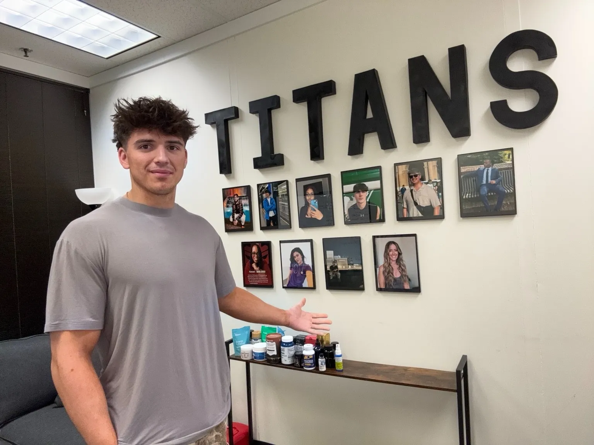
Gage Sampson — TikTok Titans HQAt the Titans office with creator wall and brand products
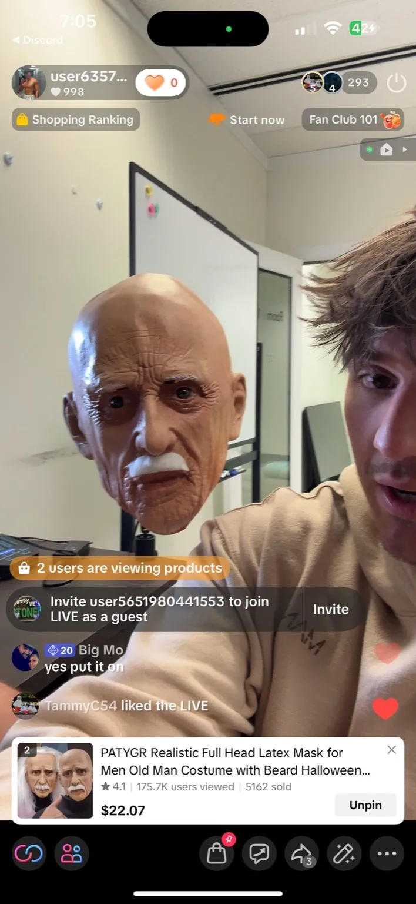
Gage Sampson — TikTok Shop LiveHosting a live selling session on TikTok Shop
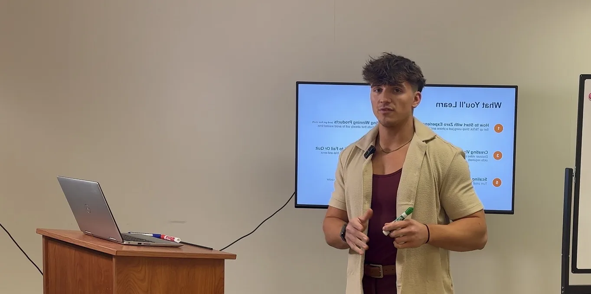
Gage Sampson — Coaching & TeachingPresenting TikTok Shop strategies to creators
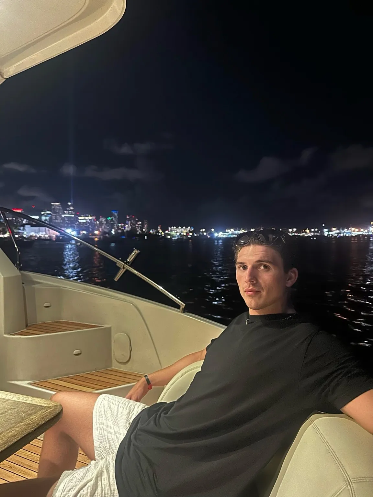
Gage Sampson — MiamiOn a boat in Miami at night
Athletics & High School
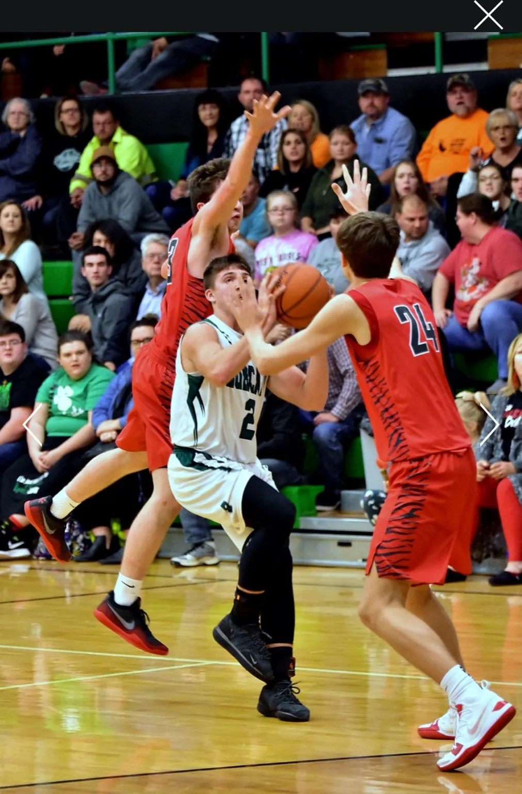
Gage Sampson — Bobcats BasketballDribbling the ball for the Green BobcatsGage Sampson — Driving to the BasketGame action for the Green Bobcats
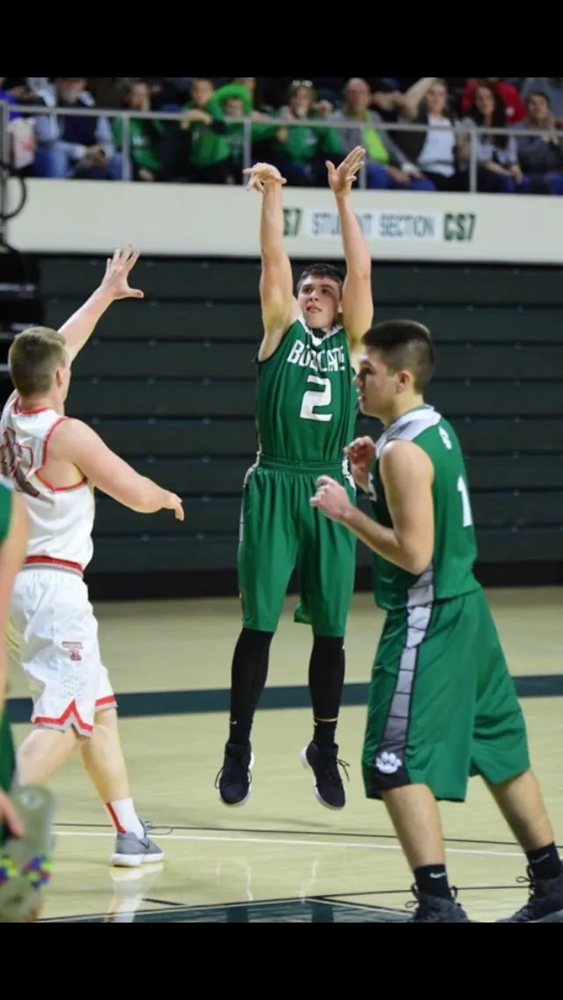
Gage Sampson — Basketball ActionHigh school basketball game for the BobcatsGage Sampson — Track & FieldRunning track relay for the Green Bobcats
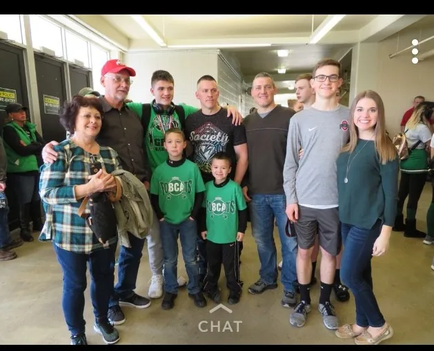
Gage Sampson — Family & SupportersWith family at a Bobcats game in Franklin Furnace
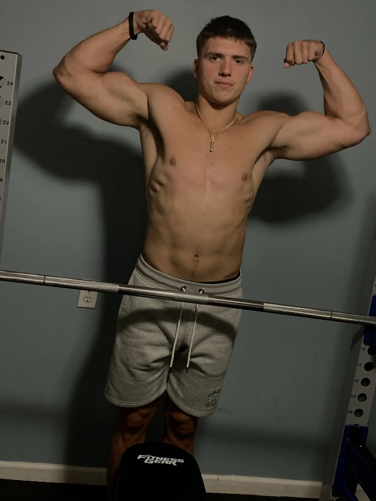
Gage Sampson — Athletic FitnessFitness and athletic discipline
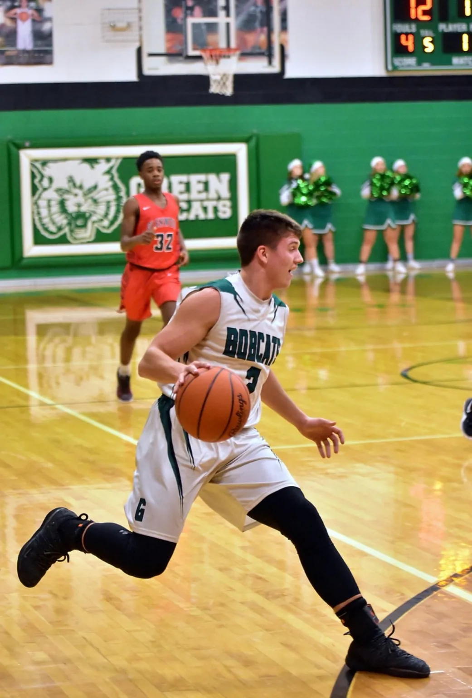
Gage Sampson — Strength TrainingAthlete strength and conditioning
Personal & Early Life
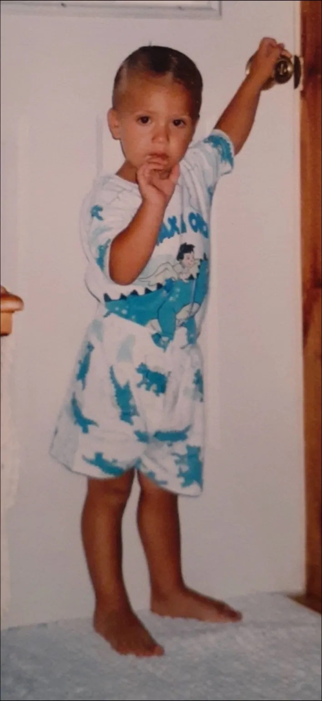
Gage Sampson — ChildhoodGrowing up in Franklin Furnace, Ohio
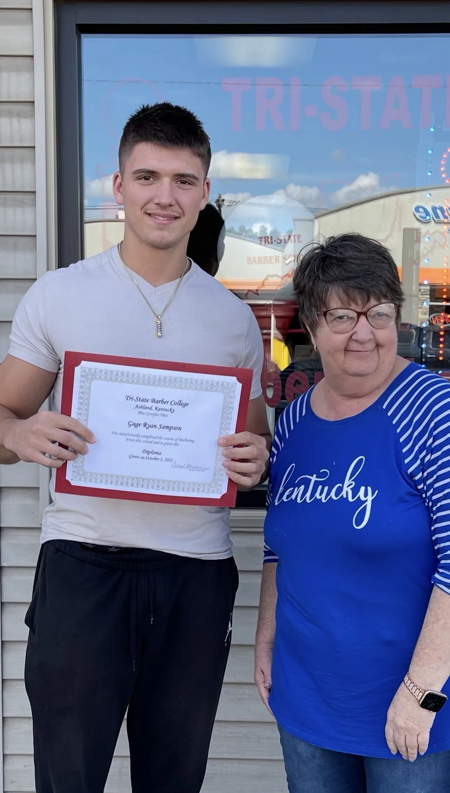
Gage Sampson — Barber School GraduationEarly career milestone in OhioGage Sampson — Working as a BarberFollowing in his father's footsteps
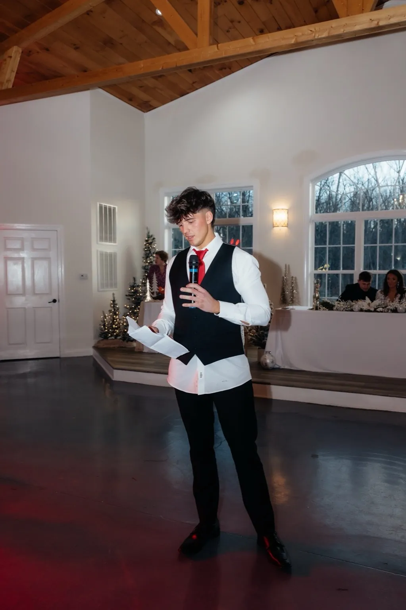
Gage Sampson — Best Man SpeechGiving a best man speech at a wedding
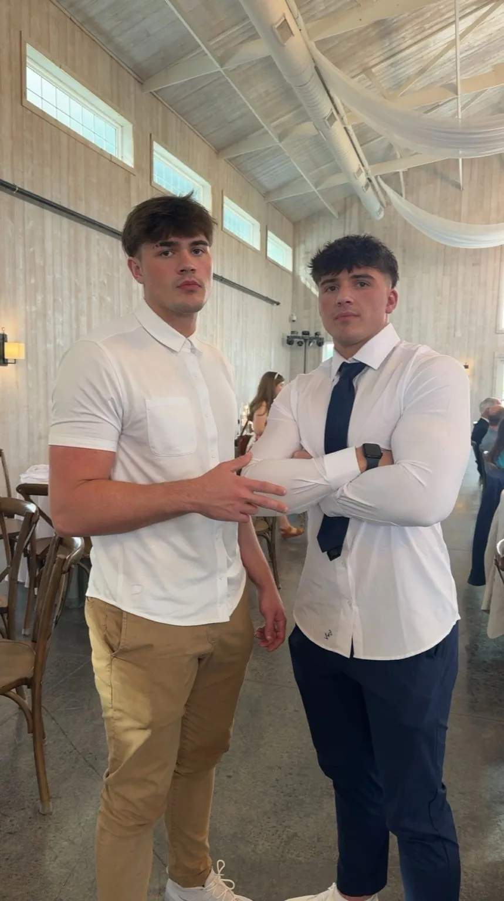
Gage Sampson — WeddingAt a wedding event
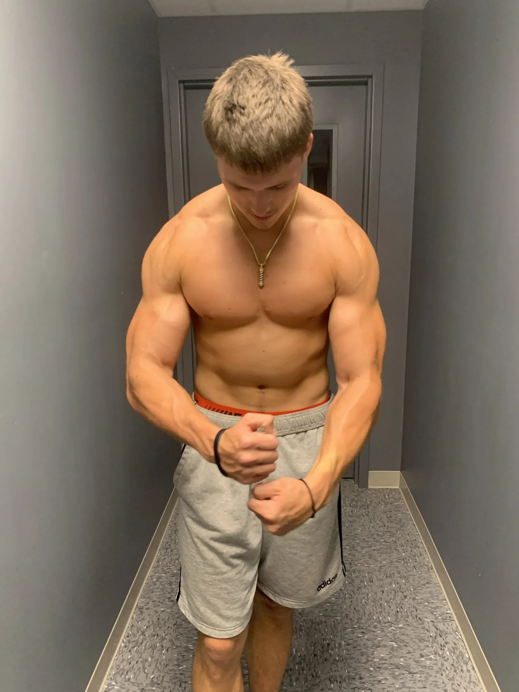
Gage Sampson — Quincy OverlookTraveling to a scenic overlook
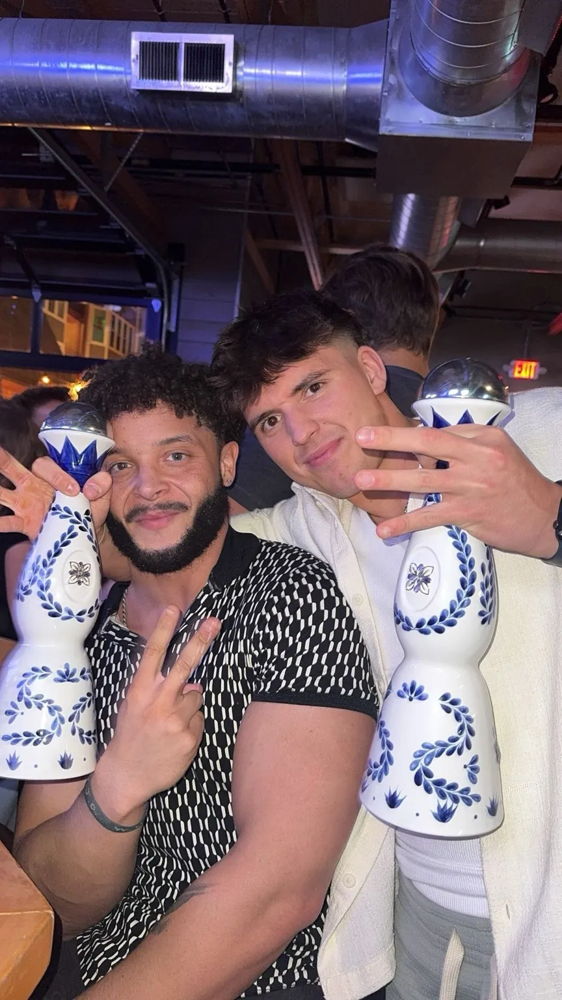
Gage Sampson — With Elijah YeroushalmiWith Elijah Yeroushalmi, fragrance influencer — fun fact: Elijah is Gage's uncle and is younger than him
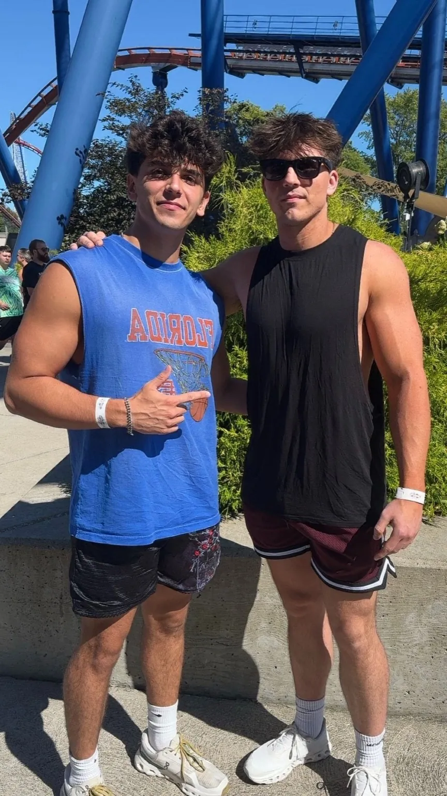
Gage Sampson — With Alec SmithWith high school best friend Alec Smith